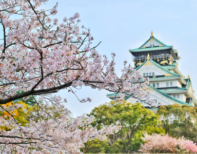

Osaka
Osaka é uma cidade agitada e moderna no Japão. A cidade é famosa por sua gastronomia deliciosa e por ser um excelente ponto de partida para explorar outras cidades japonesas próximas.
Ver detalhes

Hiroshima
Cidade localizada no sudoeste do Japão, conhecida mundialmente por ter sido o alvo do primeiro bombardeio atômico da história. Hoje, a cidade é um símbolo de paz e reconciliação. Além disso, Hiroshima também é conhecida por sua gastronomia.
Ver detalhes

Kyoto
Kyoto é uma cidade localizada no centro do Japão, conhecida por ser a antiga capital do país e preservar muitas tradições culturais japonesas. Com seus templos históricos, jardins tradicionais e cerimônias de chá, é um mergulho na cultura japonesa.
Ver detalhes